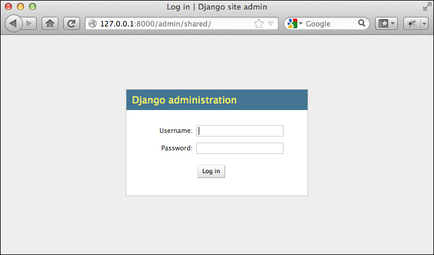
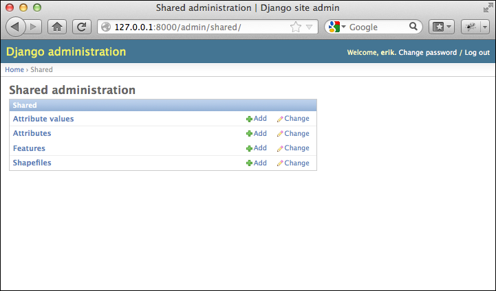
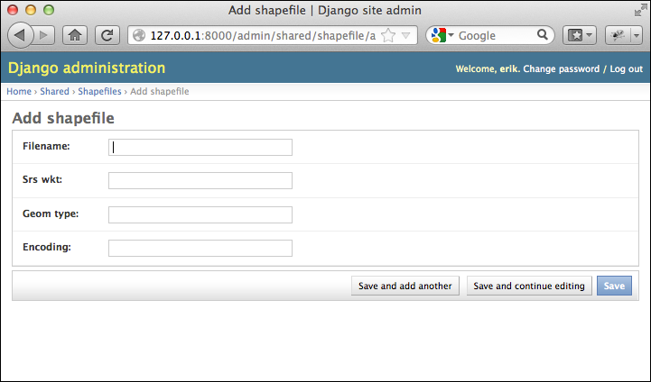
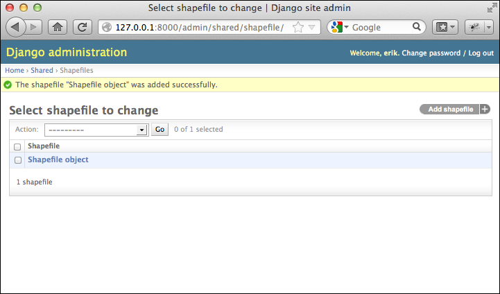
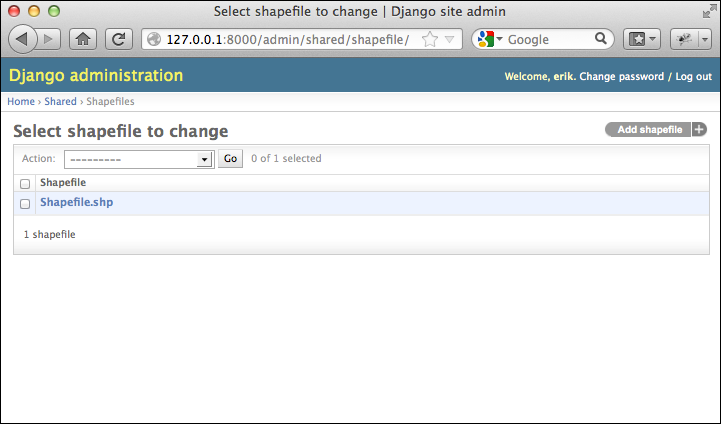
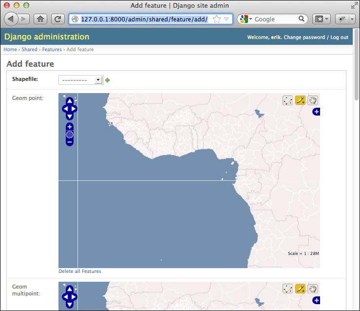

玩转管理系统#
Playing with the admin system
在我们能够使用内置的管理应用程序之前，需要先启用它。这包括将管理应用程序添加到项目中，同步数据库，告诉管理应用程序有关我们的数据库对象的信息，并将管理 URL 添加到 urls.py 文件中。让我们逐一完成这些操作：
将管理应用程序添加到项目中： 编辑您的 settings.py 文件，并取消注释 INSTALLED_APPS 列表中的 ‘django.contrib.admin’ 行:
INSTALLED_APPS = ( 'django.contrib.auth', 'django.contrib.contenttypes', 'django.contrib.sessions', 'django.contrib.sites', 'django.contrib.messages', # Uncomment the next line to enable the admin: 'django.contrib.admin', 'django.contrib.gis', 'shapeEditor' )
重新同步数据库： 在命令行中，进入您的 GeoDjango 项目目录并输入以下命令:
python manage.py syncdb
这将把管理应用程序的表添加到您的数据库中。
将我们的数据库对象添加到管理界面： 接下来，我们需要告诉管理界面有关我们想要操作的各种数据库对象。为此，请在 shapeEditor.shared 目录中创建一个名为 admin.py 的新文件，并在文件中输入以下内容:
from django.contrib.gis import admin from models import Shapefile, Feature, \ Attribute, AttributeValue admin.site.register(Shapefile, admin.ModelAdmin) admin.site.register(Feature, admin.GeoModelAdmin) admin.site.register(Attribute, admin.ModelAdmin) admin.site.register(AttributeValue, admin.ModelAdmin)
这告诉 Django 如何在管理界面中显示各种对象。如果您愿意，可以通过子类化 admin.ModelAdmin`（或 `admin.GeoModelAdmin）来自定义它的工作方式。目前，我们将接受默认设置。
备注
注意，我们为 Feature 类使用了 admin.GeoModelAdmin 对象。这是因为 Feature 对象包含几何数据，我们希望使用交互式地图来编辑它。稍后我们将看到它是如何工作的。
将管理 URL 添加到项目中： 编辑 urls.py 文件（位于 shapeEditor 项目目录中），取消注释与管理应用程序相关的行。然后，将 from django.contrib import admin 行更改为:
from django.contrib.gis import admin
以下列出了这个文件的最终内容，其中需要更改的三行已被突出显示:
from django.conf.urls.defaults import * # Uncomment the next two lines to enable the admin: from django.contrib.gis import admin admin.autodiscover() urlpatterns = patterns('', # Example: # (r'^geodjango/', include('geodjango.foo.urls')), # Uncomment the admin/doc line below and add 'django.contrib. admindocs' # to INSTALLED_APPS to enable admin documentation: # (r'^admin/doc/', include('django.contrib.admindocs.urls')), # Uncomment the next line to enable the admin: (r'^admin/', include(admin.site.urls)), )
完成这些操作后，就可以运行应用程序了。进入主 GeoDjango 项目目录并输入以下命令:
python manage.py runserver
这将启动您的 Django 项目服务器。打开浏览器并访问以下 URL：
http://127.0.0.1:8000/admin/shared
您应该会看到 Django 管理登录页面，如下图所示：
输入您之前创建的超级用户的用户名和密码，您将看到 ShapeEditor.shared 应用程序的主管理界面，如下图所示：
让我们使用此管理界面创建一个虚拟的 Shapefile。点击 Shapefiles 行中的 Add 链接，您将看到一个基本的输入界面，用于输入新的 Shapefile：
在各个字段中输入一些虚拟值（输入内容无关紧要），然后点击 Save 按钮将新的 Shapefile 对象保存到数据库中。此时会显示出数据库中存在的 Shapefile 列表。目前，列表中只有您刚创建的 Shapefile：
正如您所见，新的 Shapefile 对象被赋予了一个相当没有帮助的标签：Shapefile object。这是因为我们尚未告诉 Django 应该使用什么文本标签来表示 Shapefile（或我们其他的数据库对象）。为了解决这个问题，编辑 shared.models 文件，并在 Shapefile 类定义的末尾添加以下方法:
def __unicode__(self):
return self.filename
__unicode__ 方法返回 Shapefile 对象内容的可读性总结。在这个例子中，我们显示的是与 Shapefile 关联的文件名。如果您重新加载网页，您会看到 Shapefile 现在有了一个有用的标签：
继续为其他模型对象添加 __unicode__ 方法:
class Attribute(models.Model):
...
def __unicode__(self):
return self.name
class Feature(models.Model):
...
def __unicode__(self):
return str(self.id)
class AttributeValue(models.Model):
...
def __unicode__(self):
return self.value
虽然这看起来像是琐碎的工作，但实际上让数据库对象能够自我描述是非常有用的。如果您愿意，您还可以进一步自定义管理界面，例如通过显示与选定的 Shapefile 相关的属性和特征。现在，我们先来看看 GeoDjango 内置的几何编辑器。
返回到共享应用程序的管理页面（点击窗口顶部的 Shared 超链接），然后点击 Features 行中的 Add 按钮。与 Shapefile 类似，您将被要求输入新特征的详细信息。不过这一次，管理界面将使用交互式地图来输入 Feature 对象支持的各种几何类型：
显然，像这样有多个交互式地图并不是我们想要的，如果我们愿意的话，可以设置一个自定义的 GeoModelAdmin 子类来避免这种情况，但目前这并不重要。相反，尝试从弹出菜单中选择您要与之关联的 Shapefile，然后滚动到 Geom Multipolygon 字段，尝试向地图中添加一些多边形。
为此，点击地图添加当前多边形的点，或者按住 Shift 键并点击来完成当前多边形。界面开始时可能有点让人困惑，但它确实是可用的。我们稍后会查看编辑多边形的各种选项。目前，只需点击 Save 按钮保存您的新特征。如果您再次编辑它，您会看到之前保存的几何数据（或几何数据）再次出现在交互式地图上。
确保至少添加两个多边形。如果您尝试将单个多边形保存到 MultiPolygon 字段中，内置管理视图将显示错误。请注意，这仅仅是内置管理视图的问题；当我们为 ShapeEditor 编写编辑代码时，这个限制将不再适用。
这完成了我们对管理界面的浏览。我们不会将其用于最终用户，因为我们不希望要求用户在修改 Shapefile 数据之前登录。不过，我们将借用一些来自管理应用程序的代码，以便最终用户能够使用交互式地图编辑他们的 Shapefile 特征。
Before we can use the built-in admin application, we will need to enable it. This involves adding the admin application to the project, syncing the database, telling the admin application about our database objects, and adding the admin URLs to our urls.py file. Let’s work through each of these in turn:
Adding the admin application to the project: Edit your settings.py file and uncomment the ‘django.contrib.admin’ line within the INSTALLED_APPS list:
INSTALLED_APPS = ( 'django.contrib.auth', 'django.contrib.contenttypes', 'django.contrib.sessions', 'django.contrib.sites', 'django.contrib.messages', # Uncomment the next line to enable the admin: 'django.contrib.admin', 'django.contrib.gis', 'shapeEditor' )
Resynchronizing the database: From the command line, cd into your GeoDjango project directory and type the following:
python manage.py syncdb
This will add the admin application’s tables to your database.
Adding our database objects to the admin interface: Next, we need to tell the Admin interface about the various database objects we want to work with. To do this, create a new file in the shapeEditor. shared directory named admin.py, and enter the following into this file:
from django.contrib.gis import admin from models import Shapefile, Feature, \ Attribute, AttributeValue admin.site.register(Shapefile, admin.ModelAdmin) admin.site.register(Feature, admin.GeoModelAdmin) admin.site.register(Attribute, admin.ModelAdmin) admin.site.register(AttributeValue, admin.ModelAdmin)
This tells Django how to display the various objects in the admin interface. If you want, you can subclass admin.ModelAdmin (or admin.GeoModelAdmin) and customize how it works. For now, we’ll just accept the defaults.
备注
Note that we use an admin.GeoModelAdmin object for the Feature class. This is because the Feature objects include geometries that we want to edit using a slippy map. We’ll see how this works shortly.
Adding the admin URLs to the project: Edit the urls.py file (in the shapeEditor project directory) and uncomment the lines that refer to the admin application. Then change the from django. contrib import admin line to read:
from django.contrib.gis import admin
The following listing shows how this file should end up, with the three lines you need to change highlighted:
from django.conf.urls.defaults import * # Uncomment the next two lines to enable the admin: from django.contrib.gis import admin admin.autodiscover() urlpatterns = patterns('', # Example: # (r'^geodjango/', include('geodjango.foo.urls')), # Uncomment the admin/doc line below and add 'django.contrib. admindocs' # to INSTALLED_APPS to enable admin documentation: # (r'^admin/doc/', include('django.contrib.admindocs.urls')), # Uncomment the next line to enable the admin: (r'^admin/', include(admin.site.urls)), )
When this is done, it is time to run the application. cd into the main GeoDjango project directory and type:
python manage.py runserver
This will start up the Django server for your project. Open a web browser and navigate to the following URL:
http://127.0.0.1:8000/admin/shared
You should see the Django administration Log in page as shown in the following screenshot:
Enter the username and password for the superuser you created earlier, and you will see the main admin interface for the ShapeEditor.shared application as shown in the following screenshot:
Let’s use this admin interface to create a dummy shapefile. Click on the Add link on the Shapefiles row, and you will be presented with a basic input screen for entering a new shapefile:
Enter some dummy values into the various fields (it doesn’t matter what you enter), and click on the Save button to save the new Shapefile object into the database. A list of the shapefiles that are present in the database will be shown. At the moment, there is only the shapefile you just created:
As you can see, the new shapefile object has been given a rather unhelpful label: Shapefile object. This is because we haven’t yet told Django what textual label to use for a shapefile (or any of our other database objects). To fix this, edit the shared.models file and add the following method to the end of the Shapefile class definition:
def __unicode__(self):
return self.filename
The __unicode__ method returns a human-readable summary of the Shapefile object’s contents. In this case, we are showing the filename associated with the shapefile. If you then reload the web page, you can see that the shapefile now has a useful label:
Go ahead and add the __unicode__ methods to the other model objects as well:
class Attribute(models.Model):
...
def __unicode__(self):
return self.name
class Feature(models.Model):
...
def __unicode__(self):
return str(self.id)
class AttributeValue(models.Model):
...
def __unicode__(self):
return self.value
While this may seem like busywork, it’s actually quite useful to have your database objects able to describe themselves. If you wanted to, you could further customize the admin interface, for example by showing the attributes and features associated with the selected shapefile. For now, though, let’s take a look at GeoDjango’s built-in geometry editors.
Go back to the shared application’s administration page (by clicking on the Shared hyperlink near the top of the window), and click on the Add button in the Features row. As with the shapefile, you will be asked to enter the details for a new feature. This time, however, the admin interface will use a slippy map to enter each of the different geometry types supported by the Feature object:
Obviously, having multiple slippy maps like this isn’t quite what we want, and if we wanted we could set up a custom GeoModelAdmin subclass to avoid this, but that’s not important right now. Instead, try selecting the shapefile with which you want to associate this feature by choosing your shapefile from the pop-up menu, and then scroll down to the Geom Multipolygon field and try adding a couple of polygons to the map.
To do this, click on the map to add points to the current polygon, or hold down the Shift key and click to finish the current polygon. The interface can be a bit confusing at first, but it’s certainly usable. We’ll look at the various options for editing polygons later. For now, just click on Save to save your new feature. If you edit it again, you’ll see your saved geometry (or geometries) once again on the slippy maps.
Make sure you add at least two polygons. The built-in admin view will show an error if you try to save a single polygon into a MultiPolygon field. Note that this is only a problem with the built-in admin view; when we write the editing code for the ShapeEditor, this limitation won’t apply.
That completes our tour of the admin interface. We won’t be using this for end users, as we don’t want to require users to log in before making changes to the shapefile data. We will, however, be borrowing some code from the admin application so that end users can edit their shapefile features using a slippy map.